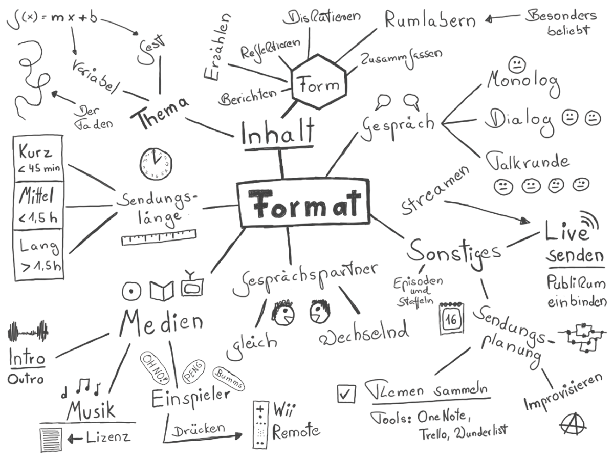

Format
Format
Das Format der Sendung ist die primäre Design-Entscheidung eines Podcasts. Wieviele Leute nehmen teil? Wer übernimmt die Rolle eines Moderators? Wie kann, soll und darf eine Sendung sein? Alle diese Parameter haben Einfluss auf die Technik und keine Technikkonstellation ist für jede Situation geeignet. Daher ist es sinnvoll, vor Beginn darüber nachzudenken, in welche Richtungen sich der Podcast entwickeln sollte und könnte. Im Folgenden eine Beschreibung typischer Podcast-Formate.

Monolog, Dialog oder Talkrunde
Solo-Podcast (stationär)
In einem Solo Podcast spricht nur eine Person. Hier wird typischerweise eine monologische Gesprächsführung gewählt, auch wenn Mischformen denkbar sind. So könnte ein Moderator z.B. auch vorher aufgezeichnetes Audio Feedback von Hörern oder anderes Sprachmaterial oder auch Musik einspielen.
Ein Solo-Podcast benötigt in der Regel viel Vorbereitung, da man sich längere Sprechpausen in der Regel nicht leisten kann, es sei denn, man nimmt nicht alles am Stück auf. Dann aber läuft man Gefahr, dass das zusammengestückelte Endergebnis auch genau so klingt: inkoherent, mit unterschiedlichen Sprechgeschwindigkeiten, Tonlagen und ggf. unzusammenhängenden Argumentationen, wenn man gar nicht aufpasst.
Ein in einem Stück aufgenommener Podcast wirkt immer natürlicher und im Idealfall auch schwungvoller, erfordert aber hohe Konzentration. Hier kommt es letztlich auf die Gesamtlänge an. Bis zu 15 Minuten lassen sich in der Regel von einer Person noch leicht produzieren. Ist das Thema gut bekannt, eigentlich selbsterklärend oder hat der Moderator einfach schon viel Erfahrung, lassen sich auch längere Sendung realisieren.
Doch das Konsumieren monologischer Podcasts kann für den Zuhörer auch schnell anstrengend werden, da Pausen und Geschwindigkeitswechsel selten sind, die dem Hörer Verschnaufpausen und Abwechslung schaffen könnten. Dabei hilft es auch nicht, dass Podcasts grundsätzlich pausierbar sind, denn die Pause ändert nichts am Fluss der Inhaltsvermittlung.
Solo-Podcasts lassen sich mit verhältnismäßig wenig Technikaufwand realisieren. Da hier nur ein Mikrofon erforderlich ist, kann man bequem zu günstigen Großmembranmikrofonen greifen, die eine sehr gutes Klangbild erzeugen. Es gibt entsprechende Modelle bereits mit eingebauter USB- Schnittstelle, so dass das Mikrofon direkt ohne Mischpult und Verstärker an den Computer angeschlossen werden kann. Ein im Mikrofon eingebauter Monitorausgang erlaubt den Anschluss eines Kopfhörers (hier in der Regel ein platzsparender 3,5mm Stereoklinkenausgang), so dass man bei Einsprechen sich voll auf seine Stimme konzentrieren kann.
Für die Aufnahme kann im Prinzip jede noch so einfache Software mit Aufnahmefunktion genommen werden. Da hier nur eine Spur aufgenommen wird, entfällt ein Mixen. Lediglich eine Nachbehandlung mit einem Kompressor ist zu empfehlen.
Wichtig beim Einsatz eines empfindlichen Großmembranmikrofons (z.B. Rode Podcaster) ist ein möglichst hallfreier Raum. Alternativ können zur Kostenersparnis auch einfache USB-Headsets verwendet werden, doch ist die Klangqualität spürbar niedriger. Da beim Solo-Podcast außer dem dem Mikrofon kaum Hardware-Kosten entstehen ist aber zu dem Großmembranmikrofon zu raten.
Der Solo-Podcast (mobil)
Ein Solo-Podcast, der unterwegs aufgenommen wird, dürfte in der Regel einen direkten Bezug zum Aufenthaltsort haben. Typische Anwendungsfälle ist Soundscaping, wo primär Umgebungsgeräusche aufgenommen werden und zwischendurch Kommentare zu den Geschehnissen in der Umgebung hinzugefügt werden.
Geht es nur um die Sprachaufnahme reicht ein portabler Audiorecorder mit eingebautem Monomikrofon. Allerdings haben heutzutage nahezu alle Geräte ohnehin ein Stereomikrofon eingebaut. Man sollte bei der Wahl des Geräts trotzdem auf Qualität achten. Allzu billige Recorder nerven z.B. durch die Aufnahme von Berührungsgeräuschen der Hand und blechernen Klang. Hier bieten die Recorder von Edirol und Tascam einen guten Mindeststandard.
Für Soundscaping ist eine Stereoaufnahme dringend empfohlen. Ein besonderer Effekt ist eine binaurale Aufnahme, die die Mikrofone direkt im Ohr platziert. Hier sind vor allem die OKM Mikrofone der Berliner Firma Soundman zu empfehlen, die für wenig Geld eine hervorragende Abbildung der Klanglandschaft ermöglichen. Hier ist zu bedenken, dass die OKMs 5V Phantomspeisung benötigen (die sog. “Plugin Power”). Manche Recorder (z.B. viele Modelle von Sony) bieten Plugin Power serienmässig, sonst kann auch mit einem entsprechenden Speiseadapter arbeiten.
Der Dialog-Podcast
Wird eine Sendung mit zwei Personen aufgenommen, ändert sich die Dynamik des Gesprächs in der Regel deutlich. Dabei ist es unerheblich, ob die beiden Personen gleichberechtigt als Moderatoren auftreten oder ob es sich um eine Moderator/Gast-Situation handelt. Die natürlichen Pausen eines wechselseitigen Gesprächs bzw. der Übergang zwischen zwei separaten Ansprachen schafft für den Hörer ein vom Solo-Podcast deutlich unterschiedliches Format.
Der Dialog ist in vieler Hinsicht ideal und für Podcasts im besonderen Maße geeignet. Durch einen abwechselnden Gesprächsverlauf entstehen für jeden Moderator oder Gast Pausen, in denen man sich über die nächsten Schritte, Fragen und Antworten Gedanken machen kann. Das Format wird üblicherweise gegenüber einem Solo-Podcast deutlich entzerrt und wirkt entspannter.
Das Dialogische stand interessanterweise auch beim Radio in den 1930er Jahren am Anfang der Entwicklung und wurde schon früh als didaktisches Format zur Fortbildung der Hörerschaft genutzt. Es stellte auch daher die frühe Form des Talk Radio dar.
Um einen Dialog-Podcast aufzunehmen, sind die technischen Anforderungen etwas höher. Zunächst einmal müssen zwei Stimmen aufgenommen werden. Dies kann mit einem gemeinsamen oder zwei Mikrofonen gemacht werden.
Sitzt man unmittelbar nebeneinander oder gegenüber und verwendet mit ein Mikrofon mit entweder einer sehr weiträumigen Nierencharakteristik oder einer Kugelcharakteristik, können beide Teilnehmer theoretisch auf einer Spur aufgenommen werden. In diesem Fall gelten die technischen Anforderungen eines Solo-Podcasts. Es sollte aber bedacht werden, dass dies die Bewegungsfreiheit der Teilnehmer ggf. nennenswert einschränkt und man immer Gefahr läuft, den Wirkungsbereich des Mikrofons zu verlassen.
Viel sinnvoller ist es, jedem Teilnehmer an der Sendung sein eigenes Mikrofon zu geben und aus den Signalen mit einem kleinen Mischpult den Sendungsmix zu erzeugen, der dann auch in die Kopfhörer geleitet wird. Das Summensignal - der Main Mix - kann dann schon als fertige Sendung aufgezeichnet bzw. auch live gestreamt werden.
Da ein Dialog-Podcast maximal nur zwei Mikrofone verwendet kann man hier mit einer Stereoaufnahme alle Spuren aufnehmen. Dies kann für eine detaillierte Nachbearbeitung oder Extraktion von Inhalten aus der Aufnahme hilfreich sein.
Die Talkrunde
Bei drei oder mehr Teilnehmern entwickelt sich ein Gespräch schnell zu einer sehe dynamischen Gesprächsrunde, die einerseits sehr unterhaltsam sein kann, es aber auch dem Zuhörer zunehmen schwerer macht, den einzelnen Sprechern zu folgen bzw. diese zu identifizieren. Entsprechend stellen diese Runden auch für die Aufnahme weitere Anforderungen.
In einer Talkrunde ist es unerlässlich, dass jeder Teilnehmer sein eigenes Mikrofon hat. Sitzen alle Teilnehmer zwangsläufig sehr eng zusammen könnte man überlegen, statt Kondensatormikrofonen eher auf qualitativ hochwertige dynamische Mikrofone zu setzen, um in der Aufnahme eine bessere Kanaltrennung zu erreichen.
Eine Möglichkeit, die Verständlichkeit einer großen Gesprächsrunde zu erhöhen, ist, jeden Sprecher im Stereobild an einer anderen Stelle zu positionieren. Wenn manche Sprecher mehr nach links, andere mehr nach rechts positioniert werden, können die Zuhörer die Stimmen ggf. leichter auseinanderhalten bzw. einen Sprecherwechsel in einem schnellen Gespräch einfacher registrieren.
Es sollte aber darauf verzichtet werden, die Positionierung zu extrem zu machen. Alle Sprecher sollten auf beiden Kanälen deutlich hörbar sein, damit auch in extremen Stereowiedergabe-Situationen (z.B. im Auto) noch ein akustisch nachvollziehbares Ergebnis herauskommt. Eine einseitige Belastung eines Kanals ist auch beim Hören mit Kopfhörern eher unangenehm.
Auch eine Mehrspuraufnahme, in der jeder Sprecher separat aufgenommen wird, ist bei einer Talkrunde sinnvoll, denn dies macht eine nachträglich Bearbeitung viel einfacher. Davon abgesehen kann man auch die räumliche Positionierung im Nachhinein feinabstimmen und ein optimales Ergebnis erzielen.